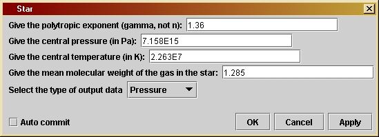

Starversion 1.0
© 2003 Bernard Schutz
|
The program is easy to use and shows many important aspects of stars: the great contrast in pressure, density, and temperature between the interior and surface layers; the way that size, composition and mass are related in a given family of stars; how high the central pressure and temperature must be in order to support a star of a given mass. This program illustrates how professional astronomers study stars in detail. By building models like these, but with more realistic physics, astronomers can infer the mass and interior structure of a star from observed properties, like its spectrum. These conclusions can then be tested on systems that provide more information, such as in binary stars where the mass can be inferred from the orbital dynamics. Other astronomers then use such models to study the long-term evolution of stars by allowing for changes in their central conditions and composition as a result of nuclear reactions. Without such interaction between observation and computer-based theory, our understanding of the Universe would be much poorer.
The parameter window shown here allows the user to determine what kind of star is being modelled. The first parameter is the polytropic exponent g. The default value is the one that gives the best model for the Sun. Recall that stars are unstable if this number is smaller than 4/3. Giant stars have polytropic indices that closely approach 4/3, while most white dwarfs are better modelled with g = 5/3. The second parameter is the central pressure of the star, in pascals. The third is its central temperature, in kelvins. The fourth parameter is the mean molecular weight of gas in the star, which allows the user to adjust the composition. The given value is appropriate for the Sun.The central temperature, pressure, and mean molecular weight together determine the constant k in the polytropic equation of state that is used for the program. Once it is fixed at the center it is assumed the same everywhere.
The
final parameter
is a drop-down window (choice box) where the user can choose what data
to output. Besides the choices available in the program Atmosphere
(pressure, density, and temperature), the program also allows the user
to look at the distribution of mass in the star. This is given by the
function
m(r),
the total mass interior to radius r.
When the Sun evolves into a red giant star, it will have a much more extended structure. Try to build a model of a star with the same overall mass as the Sun, the same composition, a value of g equal to 1.335, but a radius 100 times larger. Other giant stars have masses ten times the mass of the Sun. Build models of their structure, using the same composition and polytropic exponent as for the solar giant model.
Model a neutron star in Newtonian gravity by taking g equal to 2. Build a model whose radius is 10 km and whose mass is 1.4 solar masses, using a mean molecular weight of 1. What values of the central pressure and temperature do you need? We will build fully relativistic models using the program Neutron.
In Investigation 8.6 we derive several scaling relations, which are
proportionalities among several quantities like the central pressure,
the
radius, and the mass of the star. Build several models for a given
fixed
equation of state and see if they do in fact obey these scalings.
If you want to change the program you will have to re-compile it, as
explained by the help file Using Triana for
Gravity
from the ground up.
/*
TC is the central temperature of
the star, in kelvins. It is given by
the user in the user interface
window.
*/
private double TC;
/*
mu is the mean molecular weight
of the stellar gas, which is defined
as the average mass, in units of
the proton mass, of all the atoms,
molecules, ions, electrons, etc
that move freely in the star. We assume
that this is constant through the
star, which will not be true for
older stars which have created heavy
elements near their centers.
It is given by the user in the user
interface window.
*/
private double mu;
/*
gamma is the polytropic exponent
in the equation of state relating
pressure and density: pressure is
proportional to (density)^(gamma).
It is given by the user in the user
interface window.
*/
private double gamma;
/*
outputType is a String which governs
what kind of data will be
output. All data is output as a
Curve with x-values being the
radial distance and y-values being
one of four choices: pressure,
density, temperature, or mass. In
this case, "mass" means "mass
interior to the given radius". The
user chooses one of these four
in the user interface window.
*/
private String outputType;
/*
Three constants: k is Boltzmann's
constant; mp is the mass of
the proton; and G is Newton's
gravitational
constant. Values of
all three are given in SI units.
*/
private double k = 1.38e-23;
private double mp = 1.67e-27;
private double G = 6.672e-11;
public void process() throws Exception {
/*
Define
variables
needed for the calculation:
- q is a
combination of constants in the ideal gas law, used often.
- rhoC is
the density at the center of the star.
- gammaRecip
is the reciprocal of gamma, 1/gamma.
- D is the
proportionality factor in the polytropic equation of state
written to give the density as a function of the pressure,
rho = D * (pressure)^(1/gamma). This is determined by demanding that
the polytropic law give the same central density (depending on D and
the central pressure) as the ideal gas law (depending on the central
pressure and temperature). Thus, D is determined by the central values
of the pressure and temperature, and by the exponent gamma.
- scale
is the scale-height of the pressure, roughly the distance
over which the pressure will fall by a factor of 2.
- dr is
the size of the step in radius that the program will make.
- arrays
radius, p (pressure), rho (density), Temp (temperature),
and mass (mass inside the radius value of the same index)
hold the values of the associated physical quantities at the
successive radial steps. The arrays are initially given 2000
elements. The choice of radial step dr is designed to
ensure that the surface of the star (where p = 0) is reached
in fewer than 2000 steps. Then give the values of the first
elements of the arrays.
- lastStep
is an int that will hold the value of the array index
associated with the surface of the star. Set it to zero and
use it as a test of whether the surface has been reached (see below).
- j is a
loop counter.
*/
double q = mp * mu /
k;
double rhoC = pC * q
/ TC; //use ideal gas law to get density
double gammaRecip =
1.0 / gamma;
double D = rhoC /
Math.pow(pC,
gammaRecip);
double scale =
Math.sqrt(pC
/ G) / rhoC;
double dr = scale /
400.;
double[] radius = new
double[2000];
double[] p = new
double[2000];
double[] rho = new
double[2000];
double[] Temp = new
double[2000];
double[] mass = new
double[2000];
radius[0] = 0;
p[0] = pC;
Temp[0] = TC;
rho[0] = rhoC;
mass[0] = 0;
int lastStep = 0;
int j;
/*
Do the
calculation
as long as the top has not been reached.
*/
while ( lastStep ==
0 ) {
/*
As described in the text, we cannot start the loop accurately with the
first points. Instead we compute the values of pressure etc at the
first non-zero radial step (radius[1] = dr) by the approximations given
in the text.
*/
radius[1] = dr;
p[1] = pC;
rho[1] = rhoC;
mass[1] = 4.0 * Math.PI * dr * dr * dr * rhoC/ 3.0;
Temp[1] = q * pC / rhoC; // use ideal gas law to get temperature
/*
Do calculation step by step, using the equation of hydrostatic
equilibrium (in the second line of the loop).
*/
for ( j = 2; j < 2000; j++ ) {
radius[j] = radius[j-1] + dr;
p[j] = p[j-1] - G * rho[j-1] * mass[j-1] * dr / (radius[j-1] *
radius[j-1]);
if ( p[j] < 0 ) {
lastStep = j; //stop when the pressure goes negative
break;
}
mass[j] = mass[j-1] + 4 * Math.PI * radius[j-1] * radius[j-1] *
rho[j-1]
* dr;
rho[j] = D * Math.pow(p[j], gammaRecip); //polytropic equation of
state
Temp[j] = q * p[j] / rho[j]; // ideal gas law
}
/*
If we reach this point and lastStep is still zero, then we have
used 2000 steps and not yet reached the surface. We must start the
loop again with a larger step dr so that we can reach the surface in
2000 steps. The next line of the code resets the value of dr, and
then when we reach the end-bracket of the "while"-loop the test
in the loop will evaluate to true and the "for"-loop will be
done again with this step-size.
If we reach this point and lastStep is no longer zero, then we
have finished the calculation. The next step (changing dr) will be
executed but we will leave the "while"-loop and so the new value
of dr will not be used.
*/
dr *= 2.;
}
/*
Now prepare
output arrays depending on what output data type has
been
selected
by the user. The arrays are only long enough to
contain
the number of points to the surface of the star. Since
the value
of the variable lastStep is the step where the pressure
first went
negative, if we create arrays of length lastStep then
this value
will be excluded, since such arrays start at index 0
and finish
at index lastStep-1.
*/
double[] finalR = new
double[lastStep];
Curve outData =
null;
String unitLabel = "";
if
(outputType.equals("Pressure"))
{
double[] finalP = new double[lastStep];
for ( j = 0; j < lastStep; j++ ) {
finalR[j] = radius[j];
finalP[j] = p[j];
}
outData = new Curve( finalR, finalP );
unitLabel = " (Pa)";
}
else if
(outputType.equals("Density"))
{
double[] finalRho = new double[lastStep];
for ( j = 0; j < lastStep; j++ ) {
finalR[j] = radius[j];
finalRho[j] = rho[j];
}
outData = new Curve( finalR, finalRho );
unitLabel = " (kg/m^3)";
}
else if
(outputType.equals("Temperature"))
{
double[] finalT = new double[lastStep];
for ( j = 0; j < lastStep; j++ ) {
finalR[j] = radius[j];
finalT[j] = Temp[j];
}
outData = new Curve( finalR, finalT );
unitLabel = " (K)";
}
else if
(outputType.equals("Mass"))
{
double[] finalM = new double[lastStep];
for ( j = 0; j < lastStep; j++ ) {
finalR[j] = radius[j];
finalM[j] = mass[j];
}
outData = new Curve( finalR, finalM );
unitLabel = " (kg)";
}
outData.setTitle(outputType);
outData.setIndependentLabels(0,"altitude
(m)");
outData.setDependentLabels(0,outputType
+ unitLabel);
output( outData );
}